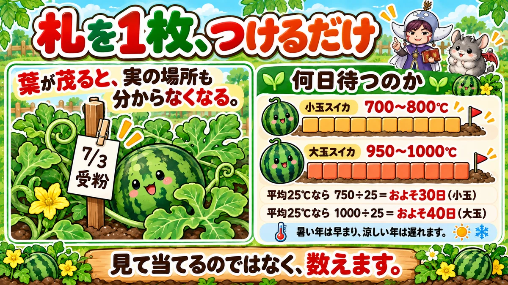
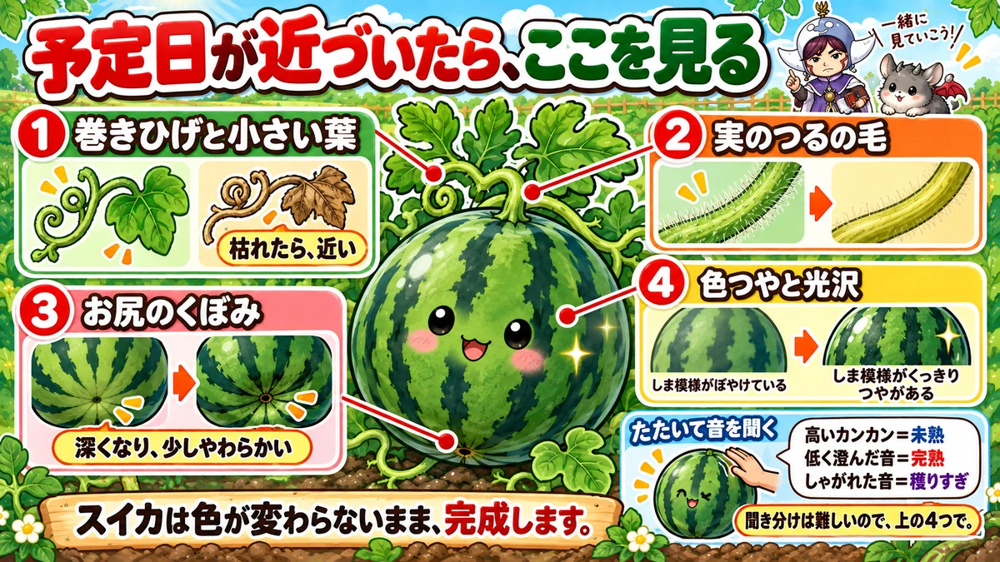
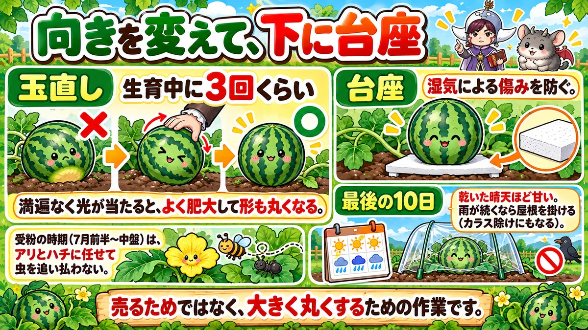

スイカの収穫日は、受粉した日に決まります🍉 札を1枚つける
🍉「切ってみたら、中がまだ白かった」
🍉「もう少し待とうと思っていたら、割れていた」
🍉「葉が茂りすぎて、どこに実があるか分からない」
どうも、8150（えいこう）です🌱 家庭菜園歴8年、理科の教員免許を持っていて、有機・無農薬で野菜を育てています。
前回は失敗のまとめでした。今日はスイカです。
スイカは家庭菜園でいちばん「いつ穫るか」が難しい野菜だと思っています。
トマトなら赤くなります。きゅうりなら大きさで分かります。でもスイカは、色も形もほとんど変わらないまま完成します。
先に、この記事でいちばん言いたいことを言っておきますね。
収穫日は、受粉した日に決まっています。
見て当てるのではなく、札を1枚つけて、数えます🍉
まず、スイカの基本データ
3つだけ押さえてください
- 科：ウリ科（きゅうり・かぼちゃ・ズッキーニ・ゴーヤの仲間。同じ場所は2〜3年あける）
- タネまき：3〜4月（保温が要ります）
- 植え付け：5月（遅霜が終わってから）
※時期は中間地（関東〜関西の平野部）が目安。寒い地域は少し遅らせ、暖かい地域は早めに。
場所は、広くとってください
地面を這わせる場合、株間は1mほど必要です。
つるは想像よりずっと伸びます。通路まで出ていくつもりで場所を決めてください。
つるは、3〜4本にします
かぼちゃと同じ考え方です。
親づるを本葉5〜6枚で摘みます。すると子づるが出てくるので、勢いのいいものを3〜4本残します。
残りは切ってください。数を絞ったほうが、1個が大きくなります。
収穫日は、計算できます

札を、1枚つける
やることは、これだけです。
受粉した日を紙に書いて、実のそばのつるに貼る。
私は洗濯ばさみと紙で作っています。油性ペンで日付を書くだけです。
目印にも、なります
これには、もうひとつ効果があります。
葉が茂ると、実がどこにあるか本当に分からなくなります。
だから私は実のそばに短い棒を立てて、そこに日付を書いた札をつけています。遠くから見ても「ここに1個ある」と分かります。
何日待つのか
ここが本題です。
スイカは受粉してから完熟するまでの「積算温度」が決まっています。
- 小玉スイカ … 700〜800℃
- 大玉スイカ … 950〜1000℃
積算温度というのは、1日の平均気温を毎日足していった合計のことです。
日数にすると
計算してみましょう。
7月の平均気温を25℃とします。
- 小玉 … 750 ÷ 25 ＝ およそ30日
- 大玉 … 1000 ÷ 25 ＝ およそ40日
つまり7月3日に受粉した小玉なら、8月上旬が収穫日です。
暑いと早まります
もちろん、あくまで目安です。
猛暑が続けば早まりますし、涼しい日が続けば遅れます。
正確にやりたい方は、最高気温と最低気温を記録できる温度計を畑に置いてください。
気象庁の観測値と自分の畑の差が分かります。3℃高い畑なら、ずっと3℃足して計算します。
私はそこまでやっていません。日付を書いて、30日か40日。それで十分当たります。
目で見る、4つのサイン

予定日が近づいたら、実を見ます
日付で当たりをつけたら、最後は実を見て決めます。
見るところは4つです。
❶ 巻きひげと、小さい葉
実のついたつるが、親づるにつながっている場所を見てください。
そこに巻きひげと、小さい葉が出ています。
この2つが枯れてきたら、収穫が近いサインです。
❷ 実のつるの、毛
実がついているつるを、よく見てください。
細かい毛がびっしり生えています。
この毛がなくなって、つるが黄ばんできたら、これもサインです。
❸ お尻の、くぼみ
実を持ち上げて、ヘタの反対側を見てください。
くぼみがあります。このくぼみが深くなり、押すと少しやわらかくなります。
❹ 色つやと、光沢
最後は全体の見た目です。
縞模様がはっきりして、表面に光沢が出ます。
言葉にしにくいのですが、「ぼやけていた模様が、パーンと張る」感じです。
叩く音は、難しいです
「スイカは叩けば分かる」と言いますよね。
一応、こう言われています。
- 未熟 … カンカンと高い音
- 完熟 … 低く、澄んだ音
- 穫りすぎ … しゃがれた音
正直に書きますが、私はまだ聞き分けられません😅 上の4つのほうが確実です。
かぼちゃ・メロンも同じです
この見方は、かぼちゃやメロンにもそのまま使えます。
メロンは匂いも出るので、そこは楽です。スイカは匂いません。
受粉のときだけ、虫を追い払わない
受粉しているのは、虫です
これは意外に思われるかもしれません。
スイカの受粉は、アリやハチがやっています。
つまり7月前半から中盤にかけては、虫に働いてもらう時期です。
この時期だけ、手を止める
だから私は、この時期は虫よけの資材も、手で取るのもやめています。
アリが雄花と雌花を行き来しているのを、そのまま見ています。
もちろんウリハムシのように葉を食べる虫は別です。でも「とりあえず全部追い払う」はやめてください。
受粉できたか、すぐには分かりません
もうひとつ、知っておいてほしいことがあります。
受粉が成功したかどうかは、鶏卵くらいの大きさになるまで分かりません。
- 数日後に黄色くなってきたら、失敗です
- 卵より大きくなるまでは、途中で落ちることもあります
1個ついたからと安心せず、いくつか確保しておいてください。
玉直しと、仕上げ

3回、向きを変えます
地面に置いたままだと、接している面が黄色いままになります。
だから途中で実の向きを変えます。これを玉直しといいます。
生育中に3回くらいで十分です。
見た目だけの話ではありません
「売るわけじゃないから」と思いますよね。私も最初はそう思いました。
でも満遍なく光が当たった実のほうが、よく大きくなり、形も丸くなります。
味にも出ます。手間の割に、効果がはっきりしている作業です。
台座を、敷いてください
もうひとつ。実の下に台座を敷いてください。
発泡スチロールの切れ端で十分です。地面から離すと、湿気による傷みを防げます。
最後の10日が、味を決めます
仕上げの話です。
収穫前の10日間、乾いた晴天が続くとスイカは甘くなります。
逆に雨が続くと、水っぽくなります。ひどいときは割れます。
だから予定日の10日前に雨の予報が並んでいたら、実の上だけビニールで屋根を作ってください。
カラス除けにもなります。私はこれで2個守りました。
学ぶ：温度を、足し算しています🔬
なぜ日数ではなく、温度なのか
ここが面白いところです。
さきほど「積算温度」という話をしました。日数ではなく、温度の合計です。
なぜでしょう。
植物は、暖かいほど速く進みます
植物の中で起きているのは、化学反応です。
そして化学反応は、温度が高いほど速く進みます。
人間の体温が一定なのと違って、植物の体温は気温そのものです。
だから「暑い日は2日分」
つまり、こういうことです。
30℃の1日は、20℃の1日より、中身が進んでいます。
だからカレンダーの日数ではなく、温度を足していくほうが正確なんですね。
「暑い夏はスイカが早い」というのは、感覚ではなく計算どおりの話です。
他の作物でも使われています
この考え方は、スイカだけのものではありません。
とうもろこしや稲、果物の収穫予測でも、積算温度が使われています。
農業は勘だけの世界ではありません。足し算で予測できる部分が、けっこうあります☺️
まとめ
ここまで読んでくださって、ありがとうございます！
- スイカはウリ科。株間1m、同じ場所は2〜3年あける
- 親づるは本葉5〜6枚で摘み、子づるを3〜4本
- 受粉した日を札に書いて、つるに貼る
- 札は「実の場所」の目印にもなる
- 小玉は積算700〜800℃、大玉は950〜1000℃
- 平均25℃なら、小玉30日・大玉40日
- 暑い年は早まり、涼しい年は遅れる
- 巻きひげと小さい葉が枯れる
- 実のつるの毛がなくなり、黄ばむ
- お尻のくぼみが深く、やわらかくなる
- 色つやが濃くなり、光沢が出る
- 叩く音での判断は難しい
- 受粉期はアリとハチに任せ、虫を追い払わない
- 受粉の成否は、卵くらいになるまで分からない
- 玉直しは生育中に3回。よく肥大し、形も丸くなる
- 実の下に台座を敷いて、地面から離す
- 収穫前10日は乾いた晴天ほど甘い。雨なら屋根を掛ける
全部やろうとしなくて大丈夫です。まずは受粉を見つけた日に、札を1枚つけてください。それだけで、切ってがっかりする回数が減ります🍉
次回は、さつまいもの話です。苗の置き方で、いもの数と大きさが変わる話をします🍠
スイカのタネ
小玉スイカなら家庭菜園でも十分いけます。場所が狭いなら立体栽培という手もあります。
![[商品価格に関しましては、リンクが作成された時点と現時点で情報が変更されている場合がございます。]](https://hbb.afl.rakuten.co.jp/hgb/56eb9cf5.81ab6dc5.56eb9cf7.881aa775/?me_id=1371758&item_id=10000697&pc=https%3A%2F%2Fthumbnail.image.rakuten.co.jp%2F%400_mall%2Fsuzunoen%2Fcabinet%2F07015728%2Fcompass1582531889.jpg%3F_ex%3D240x240&s=240x240&t=picttext "[商品価格に関しましては、リンクが作成された時点と現時点で情報が変更されている場合がございます。]")

敷きわら
実の下に敷いて、土に触れないようにします。日焼け防止にもなります。
![[商品価格に関しましては、リンクが作成された時点と現時点で情報が変更されている場合がございます。]](https://hbb.afl.rakuten.co.jp/hgb/56bc2fb2.ff40a6e6.56bc2fb3.618f6a70/?me_id=1257026&item_id=10000211&pc=https%3A%2F%2Fthumbnail.image.rakuten.co.jp%2F%400_mall%2Fsharuka%2Fcabinet%2F09042254%2Fimgrc0081094692.jpg%3F_ex%3D240x240&s=240x240&t=picttext "[商品価格に関しましては、リンクが作成された時点と現時点で情報が変更されている場合がございます。]")
シルバーマルチ
アブラムシが光を嫌うので寄りにくくなります。地温の上がりすぎも抑えられます。
![[商品価格に関しましては、リンクが作成された時点と現時点で情報が変更されている場合がございます。]](https://hbb.afl.rakuten.co.jp/hgb/55e77bb2.a973bab2.55e77bb3.28befe28/?me_id=1223148&item_id=10001699&pc=https%3A%2F%2Fthumbnail.image.rakuten.co.jp%2F%400_mall%2Fideshokai%2Fcabinet%2Fam425.jpg%3F_ex%3D240x240&s=240x240&t=picttext "[商品価格に関しましては、リンクが作成された時点と現時点で情報が変更されている場合がございます。]")
あわせて読みたい